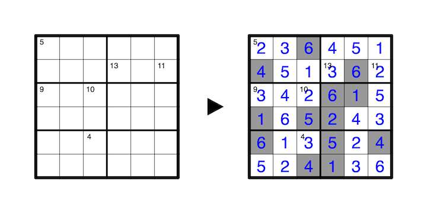

Shade some cells such that all unshaded cells are orthogonally connected and all orthogonally connected groups of shaded cells touch the perimeter of the grid. No 2x2 area may be shaded, and adjacent shaded cells must differ by at least 5.
A cell with a number in its top left corner is not shaded, and indicates the sum of all unshaded cells seen in all four directions (including itself), where shaded cells obstruct vision. Within the field of vision of a clue, numbers must not repeat.
A 1-6 example is provided. In this puzzle adjacent shaded cells differ by at least 3.
